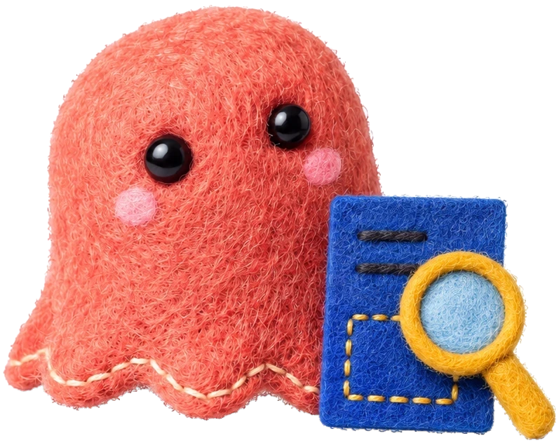

SYNK LAB51-р даалгаврын төрөл
Энэ хариулт зөв үү?
이 답, 맞을까요?
기숙사 택배 보관 안내
택배가 도착하면 문자 메시지로 알려 드립니다. 문자를 받은 학생은 ( ㉠ ). 사무실은 평일 오전 9시부터 오후 6시까지 엽니다.
㉠ 학생증을 가지고 사무실에 와서 택배를 찾아가세요.ЗөвХагас зөвБуруу
Хариултаа сэтгэгдэлд бичээрэй

Энэ хариулт зөв үү?
이 답, 맞을까요?
택배가 도착하면 문자 메시지로 알려 드립니다. 문자를 받은 학생은 ( ㉠ ). 사무실은 평일 오전 9시부터 오후 6시까지 엽니다.
㉠ 학생증을 가지고 사무실에 와서 택배를 찾아가세요.Хариултаа сэтгэгдэлд бичээрэй

Бичгийн дасгал дахиад хиймээр байна уу?
더 연습해 볼까요?
Дасгалын холбоос профайл дээр байгаа («Бичгийн дасгал»).
TOPIK 4-р түвшний онлайн ангид бичвэрээ долоо хоног бүр багшаар засуулна.
무료 쓰기 연습 · 4급 온라인 반 — 링크는 프로필에